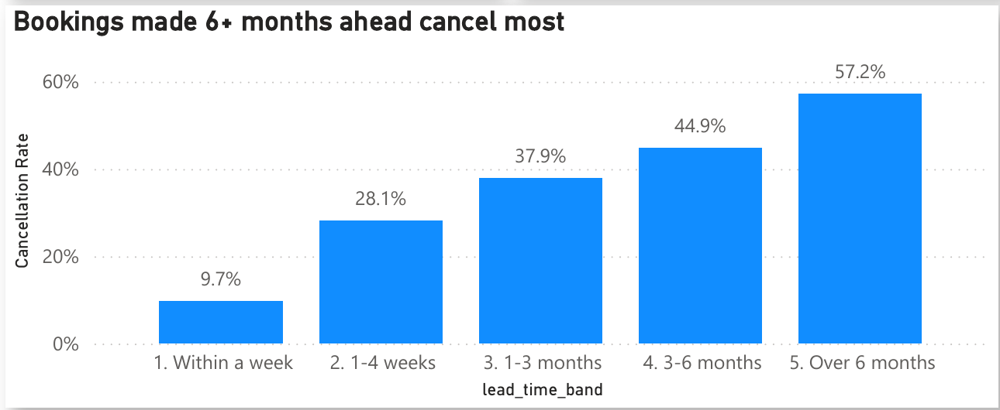
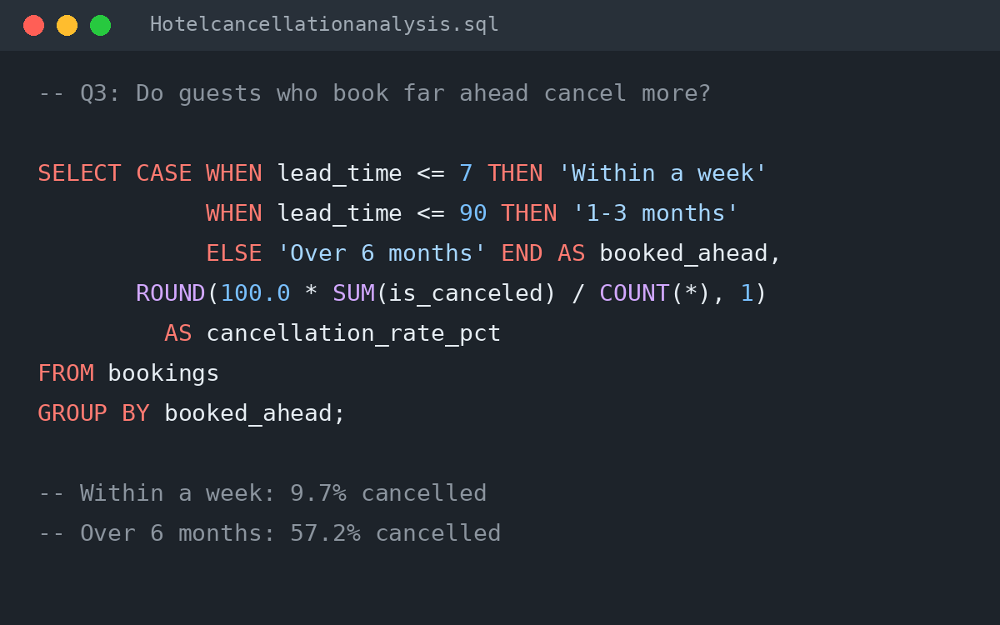

The Business Problem
Cancellations hurt a hotel twice: the revenue it planned on disappears, and the room often cannot be sold to someone else in time.
The project brief defined five stakeholders and what each needs: the General Manager (the size of the problem and a clear recommendation), the Revenue Manager (which channels, booking windows and months lose the most), Sales (which partners cancel most), Front Office (the busiest months for staffing) and Marketing (whether loyal and engaged guests are more reliable).
These needs became ten business questions and four KPIs: cancellation rate, revenue earned, revenue lost and lead time (the number of days between booking and arrival).
View Brief
The Dashboard for Stakeholders

The dashboard gives management the whole picture on one page. Four cards show total bookings, cancellation rate, revenue earned and revenue lost, and a hotel filter lets each manager switch between the city and resort hotels.
Every chart title states its finding: cancellations rise steadily with lead time, non-refundable bookings behave unusually, online travel agents lose the most revenue, and the summer months, led by August, lose the most money.
View Dashboard
Key Findings
- The earlier the booking, the higher the risk. 9.7% of bookings made within a week were cancelled, rising to 57.2% for bookings made more than six months ahead.Implication: lead time is the clearest lever for a deposit policy.
- The City Hotel has the bigger problem. It cancelled 42.2% of bookings, against 28.1% at the resort, and lost €10.9M, almost twice as much.Implication: any policy change should be tested at the City Hotel first.
- Online travel agents cost the most. They account for €10.2M of lost revenue, and group bookings have the highest cancellation rate, at 61.7%.Implication: channel and group contracts are a second lever.
- The deposit data needs checking before any decision. Non-refundable bookings were cancelled 99.4% of the time. 97% came from Portuguese groups and travel agents booking 213 days ahead on average, which suggests rooms blocked in advance and released later.Implication: if those deposits were kept, the real loss is nearer €13.1M than €16.7M.
- Engaged guests are reliable. Repeat guests cancelled 16.2% of the time and guests who made special requests 22.0%, against 37.5% overall.Implication: pre-arrival engagement is a low-cost way to reduce cancellations.
Recommendations
- Require a deposit on early bookings. Apply it to bookings made more than 90 days ahead; the business case estimates about €0.8M protected a year.Addresses finding 1 · Measure: cancellation rate for bookings made 90+ days ahead.
- Tighten group and agent contracts. Release unsold blocked rooms earlier and limit how many rooms can be held without payment.Addresses finding 3 · Measure: cancellation rate and lost revenue by channel.
- Investigate before acting. Confirm with Reservations and Finance how non-refundable bookings are recorded and whether deposits were paid.Addresses finding 4 · Measure: confirmed revenue at risk.
- Engage guests before arrival. Send pre-arrival emails inviting special requests, and reward repeat guests with a loyalty offer.Addresses finding 5 · Measure: cancellation rate for engaged guests against all others.
The Business Case
The first recommendation targets the 39,178 bookings made more than 90 days ahead with no deposit. Of these, 36.5% were cancelled, losing €7.0M over the 26 months of data.
Assumption: if a deposit prevented, or paid for, just a quarter of those cancellations, the hotels would protect about €1.76M, roughly €0.8M a year. Because the policy applies only to bookings made far in advance, guests who book closer to their stay, who already cancel least, are unaffected.
Next steps: confirm the non-refundable figures with Finance, agree the deposit level with the Revenue Manager, and track the cancellation rate monthly on the dashboard after the change.
View repository
How the Analysis Was Done

The analysis was built in SQLite using DBeaver. The first step builds a clean bookings table, calculates the number of nights and the value of each booking, and removes 1,961 bookings with no nights or an impossible price.
Each business question then uses simple SQL: COUNT and SUM for the KPIs, CASE to group bookings by how far ahead they were made, and GROUP BY to compare hotels, channels, deposit types and months. A follow-up query investigates the surprising deposit result before any conclusion is drawn.
View SQL